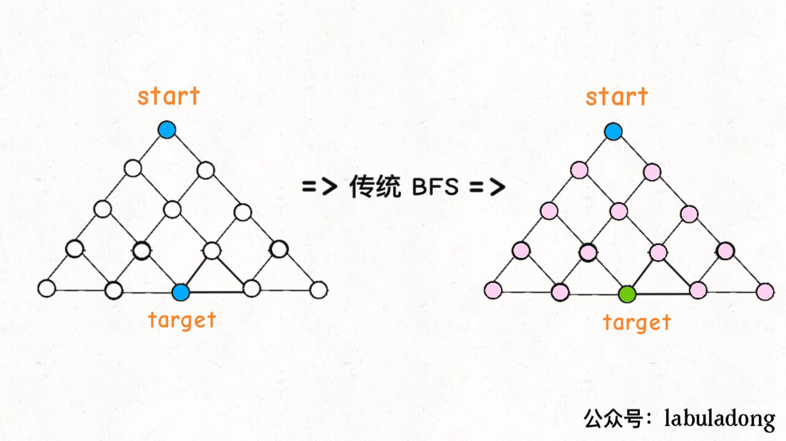
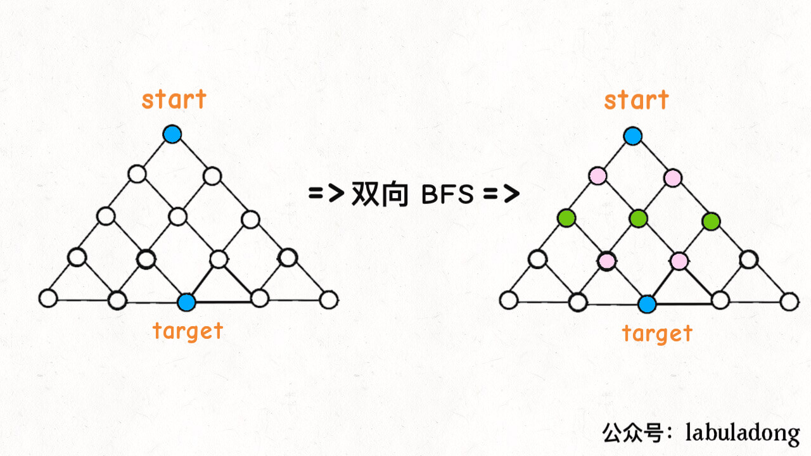

BFS
核心思想
把一些问题抽象成图，从一个点开始，向四周扩散。一般来说，采用队列来实现 BFS 算法，每次把一个节点入队。
优缺点
- 优点：找到的路径一定是最短的
- 缺点：空间复杂度比 DFS 大的多
算法框架
问题本质
问题的本质就是让你在一幅「图」中找到从起点 start 到终点 target 的最近距离，这个例子听起来很枯燥，但是 BFS 算法问题其实都是在干这个事儿
框架代码：
1 | // 计算从起点 start 到终点 target 的最近距离 |
双向BFS优化
传统的 BFS 框架就是从起点开始向四周扩散，遇到终点时停止；而双向 BFS 则是从起点和终点同时开始扩散，当两边有交集的时候停止。


双向 BFS 也有局限，因为你必须知道终点在哪里。
双向 BFS 还是遵循 BFS 算法框架的，只是不再使用队列，而是使用 HashSet 方便快速判断两个集合是否有交集。
另外的一个技巧点就是 while 循环的最后交换 q1 和 q2 的内容，所以只要默认扩散 q1 就相当于轮流扩散 q1 和 q2。
其实双向 BFS 还有一个优化，就是在 while 循环开始时做一个判断：
1 | // ... |
为什么这是一个优化呢？
因为按照 BFS 的逻辑，队列（集合）中的元素越多，扩散之后新的队列（集合）中的元素就越多；在双向 BFS 算法中，如果我们每次都选择一个较小的集合进行扩散，那么占用的空间增长速度就会慢一些，效率就会高一些。
不过话说回来，无论传统 BFS 还是双向 BFS，无论做不做优化，从 Big O 衡量标准来看，时间复杂度都是一样的，只能说双向 BFS 是一种 trick，算法运行的速度会相对快一点，掌握不掌握其实都无所谓。最关键的是把 BFS 通用框架记下来，反正所有 BFS 算法都可以用它套出解法。